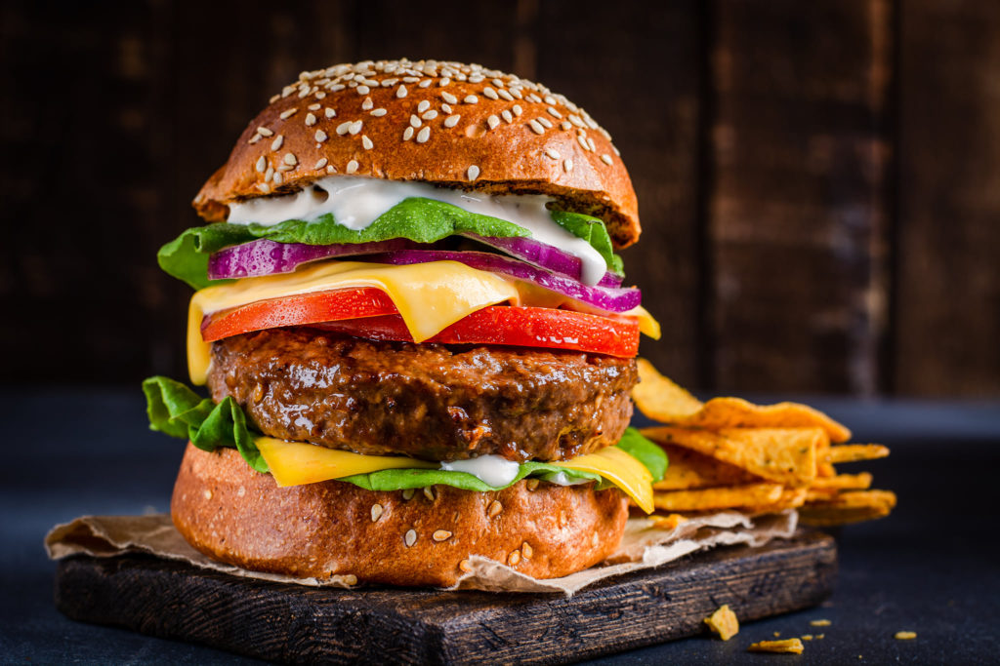
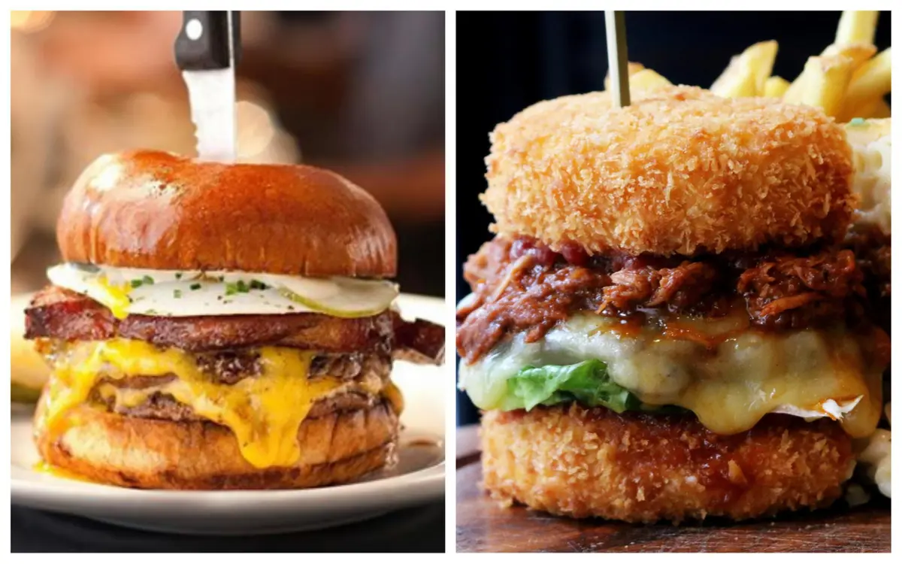

What is Burger?
A hamburger (or burger for short) is a food consisting of fillings —usually a patty of ground meat, typically beef— placed inside a sliced bun or bread roll. Hamburgers are often served with cheese, lettuce, tomato, onion, pickles, bacon, or chilis; condiments such as ketchup, mustard, mayonnaise, relish, or a "special sauce", often a variation of Thousand Island dressing; and are frequently placed on sesame seed buns.
The term burger can also be applied to the meat patty on its own, especially in the United Kingdom, where the term patty is rarely used, or the term can even refer simply to ground beef. Since the term hamburger usually implies beef, for clarity burger may be prefixed with the type of meat or meat substitute used, as in beef burger, turkey burger, bison burger, portobello burger, or veggie burger. In Australia and New Zealand, a piece of chicken breast on a bun is known as a chicken burger, which would generally not be considered to be a burger in the United States; where it would generally be called a chicken sandwich, but in Australian English and New Zealand English a sandwich requires sliced bread (not a bun), so it would not be considered a sandwich.
A Brief History Of Burger
As versions of the meal have been served for over a century, its origin remains ambiguous. The popular book The Art of Cookery Made Plain and Easy by Hannah Glasse included a recipe in 1758 as "Hamburgh sausage", which suggested to serve it "roasted with toasted bread under it". A similar snack was also popular in Hamburg by the name "Rundstück warm" ("bread roll warm") in 1869 or earlier, and supposedly eaten by many emigrants on their way to America, but may have contained roasted beefsteak rather than Frikadeller. Hamburg steak is reported to have been served between two pieces of bread on the Hamburg America Line, which began operations in 1847. Each of these may mark the invention of the Hamburger, and explain the name.